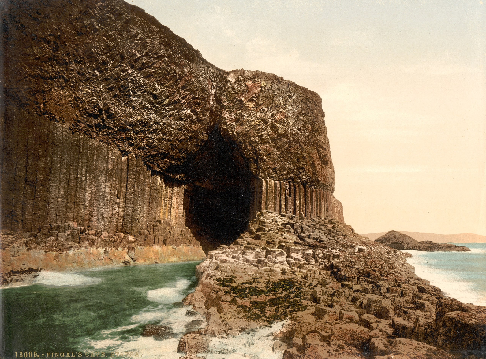

The Land and Environment for the Clan MacQuarrie
The Clan MacQuarrie has its historical roots on the island of Ulva and the surrounding island of Mull. To understand the history of the clan, we must understand what it was like to live in this area in the time period from 1400 to 1900. This section gives you an overview of the land the Clan MacQuarrie lived on and some of the challenges of living on remote islands that were disconnected from the Scottish mainland. We will also compare this with the resources of other larger clans on the mainland of Scotland.
Geography of Ulva
Physical Features and Landscape
Ulva is a small island located just off the western coast of the Isle of Mull in the Inner Hebrides of Scotland. The island stretches approximately 4.5 miles long and 2 miles wide, covering roughly 4,900 acres (about 7.7 square miles). To put this in perspective, Ulva is roughly the size of a small town or large neighborhood—not a vast territory by any means.
The landscape of Ulva is characterized by rocky coastlines, rolling hills, and boggy moorland. Unlike the dramatic mountain peaks found elsewhere in the Scottish Highlands, Ulva's terrain is relatively modest in elevation. The highest point on the island rises to just over 1,000 feet above sea level. The coastline is deeply indented with small bays and rocky outcrops, creating natural harbors that were essential for the clan's boats and fishing vessels.
The island's terrain made farming challenging. Much of the land consists of thin, acidic soil overlying ancient volcanic rock. The MacQuarries would have found only scattered pockets of arable land suitable for growing crops, mostly in the more sheltered eastern parts of the island. The rest was moorland—open, treeless terrain covered in heather, grasses, and bog plants.
Maps (Historical and Modern)
Historical maps of Ulva are rare before the 18th century. The earliest detailed cartographic representation of the Hebrides appeared in Timothy Pont's maps from the late 1500s and early 1600s, though these were not published until much later. These early maps show Ulva as a small island closely connected to Mull, which accurately reflects its geographic relationship.
By the time of the famous Johnson and Boswell visit in 1773, more accurate maps were being produced. These 18th-century maps show Ulva's settlements, the chief's house, and the narrow strait (less than 200 yards wide at its narrowest point) separating Ulva from Mull. This strait, now crossed by a small ferry, was the clan's lifeline to the larger island and, by extension, to the Scottish mainland.
Modern maps reveal what the MacQuarries knew intimately: Ulva sits in a strategic position. To the west lies the open Atlantic Ocean, while to the east, the Sound of Mull provides a more sheltered waterway connecting to the mainland port of Oban. This positioning made Ulva both exposed to Atlantic storms and connected to important maritime trade routes.
Population Estimate
Here table showing the estimated population of Ulva from 1000 to present day. Based on historical records, Ulva experienced significant population changes, with its peak in the late 1700s before the Highland Clearances devastated the island's community.
| Year | Estimated Population | Notes |
|---|---|---|
| 1000 | 50-100 | Early medieval settlement, small subsistence community |
| 1200 | 100-150 | Growth under Norse-Gaelic influence |
| 1400 | 150-200 | Clan MacQuarrie established on Ulva |
| 1500 | 200-250 | Stable clan society, agriculture and fishing |
| 1600 | 250-300 | Continued growth under MacQuarrie chiefs |
| 1700 | 400-500 | Expansion during relatively peaceful period |
| 1750 | 500-600 | Approaching peak population |
| 1780 | 600-850 | Peak population - height of settlement |
| 1794 | 500-600 | Beginning of decline; MacQuarrie chief sells Ulva |
| 1800 | 400-500 | Early clearances begin |
| 1825 | 300-400 | Clearances intensify |
| 1850 | 200-300 | Major depopulation during potato famine |
| 1875 | 150-200 | Continued emigration |
| 1900 | 100-150 | Reduced to fraction of peak |
| 1950 | 30-50 | Post-war decline continues |
| 1975 | 15-20 | Near abandonment |
| 2000 | 10-16 | Minimal permanent population |
| 2025 | 5-10 | Handful of residents, some seasonal occupation |
Key Historical Events Affecting Population:
- 1794: Sale of Ulva by last MacQuarrie chief marked beginning of decline
- 1846-1857: Highland Potato Famine caused starvation and mass emigration
- 19th century: Highland Clearances forcibly removed families for sheep farming
- 20th century: Rural depopulation continued as economic opportunities disappeared
The island went from a thriving community of 600-850 people at its late 18th-century peak to fewer than 10 permanent residents today, representing one of the most dramatic population collapses in Scottish Highland history.
Geology

Ulva's geology tells a story millions of years old. The island is composed primarily of Tertiary volcanic rocks—basalt lava flows that erupted between 55 and 60 million years ago. These are the same volcanic formations that created the dramatic landscapes of nearby islands like Staffa (famous for Fingal's Cave) and parts of Skye.
The columnar basalt formations on Ulva, while not as famous as Staffa's, create distinctive cliffs and rocky shores. This hard volcanic rock meant that the MacQuarries had access to good building stone, but it also meant that creating farmland was difficult. The soil formed from weathered basalt tends to be thin and requires constant amendment with seaweed and manure to remain productive.
Beneath and between the basalt flows, there are layers of softer sedimentary rocks and volcanic ash. In some areas, these softer layers have eroded faster than the basalt, creating caves and overhangs along the shoreline. These natural features provided shelter for boats and, in earlier times, may have served as temporary refuges.
Size and Topography
At nearly 5,000 acres, Ulva might seem substantial, but much of this land was unsuitable for supporting a large population. Historical records suggest that at its peak in the late 1700s, before the clearances, Ulva supported around 500 people. This population density reflects the limited resources available on the island.
The topography of Ulva can be divided into three main zones. The eastern shore, facing Mull, has the gentlest slopes and the best farmland. This is where the main settlements, including the chief's residence, were located. The central portion of the island rises into moorland hills, useful primarily for grazing sheep and cattle. The western coast faces the Atlantic and is characterized by steep cliffs and exposed headlands—dramatic and beautiful, but harsh and unforgiving.
Compared to the mainland territories of larger clans like the Campbells or MacDonalds, Ulva was tiny. The Campbell lands, for instance, stretched across thousands of square miles of Argyll. The MacDonalds controlled vast territories in the Western Isles and western Highlands. The MacQuarrie territory, while strategically positioned, could never compete in terms of size or resources. This geographical limitation affected everything from the clan's military strength to its political influence.
Access to Trading Routes
Despite its small size, Ulva had one crucial advantage: location. The island sat along important maritime trading routes that connected the Hebrides to Ireland, the Scottish mainland, and even to continental Europe. In an era when sea travel was often faster and easier than overland travel, coastal position mattered enormously.
The Sound of Mull, just east of Ulva, was a major shipping lane. Vessels traveling between the northern and southern Hebrides, or between the islands and the mainland ports like Oban or Fort William, regularly passed nearby. This meant the MacQuarries had opportunities to trade their goods—fish, cattle, wool—and to acquire items they couldn't produce themselves, such as metal tools, salt, and grain during poor harvest years.
However, this position also brought challenges. The waters around Ulva could be treacherous, with strong tidal currents, submerged rocks, and sudden storms sweeping in from the Atlantic. Navigation required intimate local knowledge, which the MacQuarries certainly possessed but which also made their waters dangerous for outsiders. This natural defense helped protect the clan but could also isolate them during severe weather.
The clan's connection to Clan MacLean of Duart was partly based on geography. The MacLeans controlled much of Mull and had their seat at Duart Castle, visible across the water from parts of Ulva. This proximity made alliance logical and necessary, as the MacQuarries needed good relations with their larger, more powerful neighbors to maintain access to markets and political networks.
Historical Climate
Climate During Clan Prominence (16th-18th Centuries)
The climate of Ulva during the MacQuarrie clan's prominence was markedly different from today, and understanding this is crucial to appreciating the challenges they faced. The period from the 16th through 18th centuries encompassed what scientists call the Little Ice Age, a time of significantly cooler temperatures across the Northern Hemisphere.
Even in the best of times, Ulva's climate was maritime and cool. The surrounding Atlantic Ocean moderates temperatures, preventing extreme heat in summer but also limiting warmth. Winters were mild by continental standards—snow rarely accumulated for long—but the combination of cold, wind, and dampness could be penetrating. Summers were cool and often overcast, with frequent rain.
For the MacQuarries, this meant a short growing season. Crops like oats and barley, which were staples of the Highland diet, had to be hardy varieties that could ripen in the brief summer. Wheat, which requires more warmth and sunshine, was nearly impossible to grow successfully. This limitation affected everything from daily nutrition to the clan's ability to produce surplus food for trade or to support population growth.
The constant moisture created both opportunities and challenges. The abundant rainfall fed numerous streams and kept the moorlands lush, supporting livestock. However, the same moisture made it difficult to dry grain for storage and created ideal conditions for crop diseases. Preserving food through the winter required careful planning and significant effort.
Impact of the Little Ice Age
The Little Ice Age, roughly spanning from the 14th to the 19th century, reached its coldest phases during the MacQuarrie clan's time on Ulva. The 17th century, in particular, saw some of the coldest temperatures in recorded history. While Ulva didn't experience the frozen rivers and extreme cold of continental Europe, the effects were nonetheless severe.
Growing seasons shortened by several weeks. Harvests that were already marginal became failures. Historical records from the 1690s describe widespread famine in Scotland, with the Highlands particularly hard hit. The MacQuarries would have faced years when their crops simply didn't ripen before autumn storms and early frosts destroyed them. In such years, the clan relied heavily on livestock, fish, and whatever grain could be obtained through trade or from stores.
The Little Ice Age also brought stormier weather. The Atlantic, always tempestuous, became even more violent. This affected fishing—one of the island's most important food sources—and made sea travel more dangerous. Storms could isolate Ulva for weeks at a time, cutting the clan off from markets and assistance.
Paradoxically, the clan's maritime lifestyle provided some resilience. While crop failures devastated entirely agricultural communities, the MacQuarries could supplement failed harvests with fish, seaweed (which was eaten and used as fertilizer), and shellfish. The surrounding waters, while dangerous, were a source of food that didn't depend on the growing season.
The coldest periods of the Little Ice Age coincided with times of political upheaval, including the Jacobite risings. Some historians suggest that climate stress contributed to social unrest, as communities struggled to survive on diminishing resources. For a small clan like the MacQuarries, already operating on thin margins, these climate challenges compounded the political and military pressures they faced.
Seasonal Patterns and Their Effects
The seasonal rhythm on Ulva was intense and left little room for error. Spring, arriving late by southern standards, was a time of intense activity. Fields had to be plowed and planted, livestock needed to be moved to summer pastures, and the community had to stretch dwindling winter food stores until new crops and spring lambs could supplement their diet.
Summer, though short, was the most pleasant season. This was when the clan could fish extensively, as calmer seas made it safer to venture further from shore. Summer was also the time for gathering—collecting seaweed for fertilizer, cutting peat for winter fuel, and harvesting wild plants for food and medicine. The long northern days meant work could continue until late evening.
Autumn was anxious and critical. Everything depended on whether the crops would ripen before the weather turned. Oats and barley needed to be harvested, dried, and stored. Livestock that couldn't be fed through winter were slaughtered, and the meat preserved by salting or smoking. Failure to complete these tasks successfully meant hunger or starvation before spring.
Winter brought its own rhythm. With short days and long nights, much work had to happen indoors. This was the season for maintaining tools and equipment, spinning wool, weaving cloth, and telling the stories that preserved clan history and identity. It was also a time of gathering together, as the clan sought warmth and companionship during the dark months. However, winter storms could be terrifying, battering the island with waves and wind that sometimes damaged buildings and boats.
The seasonal calendar affected everything, including warfare and politics. Major military campaigns in the Highlands typically occurred in summer when travel was easier and men weren't needed for planting or harvest. The Jacobite rising of 1745-46, which ended at Culloden in April 1746, saw Highland warriors leaving their homes before spring planting. This timing contributed to the devastation that followed, as fighting-age men were killed or imprisoned precisely when their labor was most needed.
Environmental History
Land Use and Modifications
The MacQuarries didn't simply live on Ulva—they shaped it through centuries of habitation. When the clan established itself on the island around 1400, they inherited a landscape already modified by earlier peoples. Archaeological evidence suggests human activity on Ulva dating back thousands of years, to the earliest Neolithic farmers.
The MacQuarries practiced what we would now call mixed agriculture. They maintained small fields, called "infields," close to their settlements where they grew oats and barley. These infields received most of the available fertilizer (animal manure and seaweed) and were worked intensively. Beyond the infields lay "outfields," which were cultivated occasionally and otherwise used for grazing. This system, called "runrig," was common throughout the Highlands.
The clan also created extensive lazy beds—raised cultivation ridges that improved drainage in the boggy soil. The distinctive parallel ridges of old lazy beds can still be seen on Ulva today, testament to the backbreaking labor of generations. These ridges were typically about 3-6 feet wide, separated by drainage furrows. Creating and maintaining them required constant work with hand tools, primarily the cas-chrom, a distinctive Highland foot plow.
Stone walls and dykes crisscrossed parts of the island, defining fields and enclosing areas for livestock. Building these walls was communal work, requiring cooperation across the clan. Some of these ancient walls still stand, built without mortar but carefully fitted to last for centuries.
The MacQuarries also modified the shoreline. Small piers and boat noosts (stone-lined slots for pulling up boats) were built to protect vessels. Seaweed was systematically harvested from the rocks at low tide, not only for fertilizer but also for making kelp ash, which could be sold for use in soap and glass making—an important source of income in the 18th century.
Ancient and Historical Forests in Scotland
To understand the MacQuarrie environment, we must recognize what was largely absent: trees. When people imagine Scotland, they often picture misty mountains and romantic glens, perhaps with scattered trees. But they rarely picture the dense forests that once covered much of the country.
In the period following the last Ice Age, roughly 10,000 years ago, Scotland was covered by the Caledonian Forest. This was a vast woodland ecosystem dominated by Scots pine in the Highlands, with oak, birch, hazel, and other species in different areas. These forests hosted wolves, bears, lynx, elk, and wild boar—an ecological richness hard to imagine today.
By the time the MacQuarries arrived on Ulva, most of this forest was already gone. Millennia of human activity—clearing land for agriculture, cutting timber for building and fuel, and grazing livestock—had removed most of Scotland's tree cover. The process accelerated during the medieval period, as Scotland's population grew and demand for timber increased.
On Ulva itself, there's little evidence that extensive forests ever existed during the historical period. The island's exposed position, thin soils, and maritime climate wouldn't have supported large trees even without human interference. However, there may have been more scrubby woodland—hazel, birch, and willow—than exists today. Even these modest trees would have been valuable, providing firewood, tool handles, and wattle for building.
The lack of timber had profound effects on Highland life. Houses were built with stone walls and often roofed with thatch or turf rather than wooden beams. Large timbers for ships or substantial buildings had to be imported or salvaged from driftwood. The shortage of wood for fuel meant that peat—partially decomposed plant matter cut from bogs—became the primary fuel source throughout the Highlands.
Deforestation and Landscape Change
The deforestation of Scotland was largely complete by the MacQuarrie era, but the process continued. What few scattered woodlands remained in the Highlands were often cleared for sheep farming, especially during the 18th and 19th centuries. The introduction of large-scale commercial sheep farming after the Jacobite risings accelerated landscape change throughout the Highlands.
On Ulva, the most significant landscape change came after the MacQuarries lost the island in 1794. The new owners cleared many of the existing settlements to make way for sheep. This process, part of the broader Highland Clearances, transformed Ulva from a landscape of small farms and communities to one dominated by open sheep pasture. Buildings were demolished, cultivation ridges were leveled in places, and the population plummeted from around 500 to fewer than 50 within a few generations.
Even the moorland itself was modified. Heather moorland, which seems wild and natural, is actually a managed landscape. Regular burning of old heather encourages new growth, which provides better grazing for sheep and grouse. This practice, which continues today, creates the patchwork of different-aged heather that characterizes Highland moorland.
Comparing Ulva to mainland territories, the environmental changes were more dramatic on the larger estates. Mainland glens that once held substantial populations were completely cleared. Vast forests in areas like Wester Ross were cut down to feed industrial development or cleared for sporting estates. In this context, Ulva's changes, while devastating to the MacQuarries, were actually less extreme than those experienced in some mainland areas.
Archaeological Evidence of Settlement
The physical traces of the MacQuarrie occupation remain visible on Ulva for those who know how to read the landscape. Archaeological surveys have identified numerous sites associated with the clan period and earlier settlements.
The most obvious remains are the ruined buildings. Scattered across Ulva are the stone footings of houses, barns, and other structures. Most date from the 18th and early 19th centuries—the final decades of intensive occupation before the clearances. These buildings typically followed a traditional Highland pattern: long, low structures with thick stone walls, small windows, and a central hearth. Families and their livestock often shared these buildings, with cattle occupying one end for warmth during winter.
The lazy bed ridges mentioned earlier are everywhere on Ulva. These corrugated patterns in the landscape show where intensive cultivation occurred. Some areas show overlapping patterns of ridges from different periods, evidence of continuous agricultural use over centuries. The labor represented by these ridges is staggering—each one dug and maintained by hand, often on steep slopes.
Around the old settlement areas, researchers have found middens—refuse heaps containing shells, animal bones, and broken pottery. These archaeological treasures tell us what the MacQuarries ate and how they lived. The presence of marine shells shows the importance of shellfish in the diet. Cattle bones indicate which animals were slaughtered and at what age. Pottery fragments can sometimes be dated, helping establish occupation timelines.
More enigmatic are older features. Standing stones, burial cairns, and the remains of Iron Age forts predate the MacQuarries by thousands of years, yet they were part of the landscape the clan inhabited. Some of these ancient sites may have held spiritual or cultural significance for the MacQuarries, connecting them to the deeper history of their homeland.
Recent archaeological work using LIDAR (Light Detection and Ranging) technology has revealed features invisible to the naked eye. This aerial survey method can see through vegetation to expose ancient field boundaries, structures, and even pathways. This technology is gradually building a more complete picture of how intensively Ulva was occupied and how the landscape was organized.
Modern Conservation Efforts
Today, Ulva is recognized as having significant natural and historical value. The island is partially protected as a Site of Special Scientific Interest (SSSI) due to its geology and ecology. Conservation efforts focus on protecting seabird colonies, maintaining moorland habitats, and preserving archaeological sites.
The current owners have welcomed efforts to document and protect the island's heritage. Interpretive signage now explains the island's history, including the MacQuarrie period. Walking trails allow visitors to see the ruined settlements and agricultural remains, helping people understand what Highland life was like centuries ago.
Environmental conservation on Ulva faces complex challenges. How should the land be managed? Should there be efforts to restore native woodland, even though trees were largely absent during the clan period? Should the moorland be maintained through traditional practices like heather burning, even though this is now controversial from a conservation perspective? These questions don't have simple answers.
Some conservationists advocate for "rewilding"—allowing natural processes to restore ecosystems without human intervention. Others argue for maintaining the cultural landscape that reflects centuries of human inhabitation. In practice, most approaches try to balance these perspectives, protecting both natural and cultural heritage.
For descendants of the MacQuarries, Ulva remains a powerful symbol of their heritage. While the clan no longer owns the island, their history is woven into every stone wall and cultivation ridge. Visits to Ulva can be deeply emotional for those who trace their ancestry back to the island's small community of farmers and fishers.
Natural Resources
Agriculture and Arable Land
The agricultural resources of Ulva were modest but vital to clan survival. Arable land—land suitable for growing crops—made up only a small fraction of the island's total area. Historical estimates suggest that perhaps 10-15% of Ulva could be cultivated, even with the intensive labor of creating lazy beds and improving drainage.
The primary crops were oats and barley, both hardy grains that could tolerate the cool, damp climate. Oats were particularly important, forming the basis of many Highland dishes. Oatmeal could be made into porridge, bannocks (flatbread), and brose (a simple dish of oatmeal mixed with hot water or milk). Barley was used for making bread and for brewing. In some years, the clan might also grow small quantities of vegetables like kale, turnips, and potatoes (after their introduction in the 18th century).
Yields were low by modern standards. A good harvest might produce only three to five times the amount of grain planted, compared to ratios of 30:1 or higher with modern agriculture. This meant that much of what was grown had to be saved as seed for the next year, leaving limited surplus for consumption or trade.
The quality of agricultural land on Ulva couldn't compare with the fertile lands available to mainland clans. Clans in areas like the Lowlands or the more sheltered eastern Highlands had access to deeper soils, longer growing seasons, and less exposure to Atlantic storms. This agricultural disadvantage meant the MacQuarries could never support as large a population or generate as much wealth from farming alone.
Livestock farming was actually more important than crops for the clan's economy. Cattle, in particular, were central to Highland economy and culture. Cattle could graze on the rough moorland that couldn't be cultivated, converting inedible grass into meat, milk, leather, and trade goods. A clan's wealth was often measured in cattle, and cattle raids were a traditional (if risky) way to acquire wealth.
Sheep became increasingly important during the 18th century, especially as wool became a valuable commodity. However, sheep farming requires less labor than cattle farming, and the shift toward sheep was one factor in the later depopulation of the Highlands. Ironically, the MacQuarries' loss of Ulva was followed by the island's conversion to large-scale sheep farming, which required far fewer people than the traditional mixed farming the clan had practiced.
Fishing and Maritime Resources
For an island clan, the sea was as important as the land—perhaps more so. The waters around Ulva teemed with fish and shellfish that provided essential protein and could be preserved for winter or traded for other goods.
Herring was particularly important. These small, oily fish traveled in enormous schools and could be caught in vast quantities during their seasonal migrations. Herring could be gutted, salted, and packed in barrels, creating a product that could be stored for months or sold to merchants. Salted herring became a staple food throughout Scotland and was an important trade commodity.
Cod, haddock, and other whitefish were also caught, both for immediate consumption and for preservation by salting or drying. On rocky shores exposed to wind, fish could be air-dried to create a product similar to the stockfish that was a staple in Scandinavia. This preserved fish was valuable both for feeding the clan through winter and as a trade good.
Shellfish represented an always-available food source that required no special equipment or dangerous sea journeys. Mussels, limpets, winkles, and other mollusks could be gathered from rocks at low tide. Crabs and lobsters could be caught in simple creels (wicker traps). While sometimes looked down upon as "poverty food," shellfish provided crucial nutrition, especially in times when other foods were scarce.
The MacQuarries also harvested seaweed extensively. Several types of seaweed were edible, including dulse and carrageen moss. More importantly, seaweed was essential fertilizer for the thin soils. Kelp (large brown seaweeds) became particularly valuable in the 18th century when it was discovered that burning kelp produced an ash rich in alkali salts, used in making soap and glass. For a time, kelp harvesting and burning provided significant income to island communities, though the work was hard and unpleasant.
Marine mammals also provided resources. Seals were hunted for their meat, oil, and skins. While whaling was not practiced on a large scale from small islands like Ulva, stranded whales represented windfalls—providing enormous quantities of meat and valuable oil. Historical records from across the Highlands document disputes over ownership rights to beached whales, showing how valuable they were.
Compared to the agricultural resources of mainland clans, Ulva's maritime resources were a strength. While the MacQuarries' farmland couldn't compete with richer mainland soils, their fishing grounds were as productive as anyone's. This gave the clan a degree of economic resilience that purely agricultural communities lacked. However, it also meant they were vulnerable to anything that disrupted fishing—storms, changes in fish migrations, or later, restrictions imposed by distant landlords.
Forestry and Woodland
As discussed earlier, significant forestry resources were largely absent from Ulva during the MacQuarrie period. The scrubby growth that existed—hazel, willow, birch saplings—provided some materials but nothing like the timber resources available in other regions.
This scarcity meant that wood products were precious. Every piece of driftwood that washed ashore was collected and saved. Branches were carefully harvested from the few trees that existed, and nothing was wasted. Oak timbers for boats or structural beams had to be obtained through trade or by salvaging shipwrecks—another reason why stranded ships, though tragic, represented valuable resources.
Without adequate wood for fuel, the MacQuarries depended on peat. Peat bogs covered much of Ulva's interior moorland. Cutting peat was hard work. The top layer of living vegetation had to be removed, then the peat itself cut into brick-sized pieces. These pieces were then stacked to dry through the brief summer, hopefully drying enough to burn before autumn rains came. Once dry, peat provided a slow-burning, smoky fuel that could keep a fire going through long winter nights.
Mainland clans with access to forests had significant advantages. Timber provided superior building materials, better fuel, and a valuable trade commodity. Large landholders in forested areas could profit from selling timber for shipbuilding, construction, or charcoal making. The MacQuarries lacked these options, making them dependent on what they could grow, catch, or trade for.
In this context, every piece of natural resource the island provided was carefully managed. Nothing was wasted. Heather provided thatching material and was also used for making brooms, baskets, and even mattress stuffing. Rushes from wet areas could be woven into floor coverings or twisted into candles when soaked in animal fat. The sparse resources demanded creativity and careful stewardship.
Water Sources
Fresh water was generally abundant on Ulva, thanks to high rainfall. Numerous burns (small streams) flowed down from the moorland, providing clean drinking water. Springs emerged where water-bearing layers of rock met impermeable volcanic basalt, creating reliable year-round sources.
The abundance of water was actually a mixed blessing. While it meant the clan never faced the droughts that could devastate areas with lower rainfall, it also contributed to boggy conditions that made agriculture difficult. Managing water—draining fields, maintaining ditches, ensuring drinking water sources remained clean—required constant effort.
Compared to some drier parts of Scotland, water abundance was an advantage. Some mainland areas, particularly in the eastern Highlands, could experience summer droughts that stressed crops and reduced stream flow. Ulva's reliability of water meant that, while growing conditions were challenging, at least water shortage was rarely a problem.
Water powered no mills on Ulva—the streams were too small and the topography wrong for effective water wheels. For grinding grain, the MacQuarries likely used hand querns (small rotary mills) or traveled to mills on Mull. Larger mainland estates often had water-powered mills, providing both efficiency in processing grain and income from those required to use them. This was another small disadvantage of the island's limited size and resources.
Flora and Fauna
Historical Ecology
The ecological community that the MacQuarries lived among was distinctive, shaped by the island's maritime climate, geology, and centuries of human influence. Understanding this ecology helps us appreciate both the possibilities and constraints of life on Ulva.
The vegetation was dominated by moorland communities. Heather was ubiquitous, covering the hillsides in a purple carpet during late summer flowering. Different heather species provided year-round greenery: common heather, bell heather, and cross-leaved heath each adapted to slightly different conditions. Among the heather grew crowberry, bilberry, and other low shrubs that provided modest but welcome wild food sources.
In wetter areas, sphagnum moss created bogs—the source of the peat the clan harvested for fuel. These bogs hosted their own distinctive plants: cotton grass with its white, fluffy seed heads; sundews, small carnivorous plants that trapped insects; and bog asphodel, producing yellow flowers in summer. While botanically interesting, these bog plants were of little direct use to the MacQuarries, though they were part of the landscape the clan knew intimately.
Grasslands existed in areas that were grazed or had been cultivated. These weren't the smooth, uniform grass of modern lawns but rather diverse mixtures of grasses, sedges, and wildflowers. Species like Yorkshire fog, bent grass, and fescues dominated, along with flowering plants like tormentil, eyebright, and various types of clover.
The shoreline supported its own specialized ecology. Above the high tide mark, salt-tolerant plants like thrift (sea pink) and sea campion grew on rocky ledges. Sandy or gravelly beaches hosted marram grass and other pioneering species. Most importantly, the intertidal zone was a productive ecosystem of seaweeds, ranging from small red and green algae to large brown kelps that could grow several meters long.
Compared to mainland Scotland's greater environmental diversity, Ulva's ecology was somewhat limited. The island lacked the extensive wetlands found in some mainland areas, the diverse woodland communities that still existed in scattered pockets, or the richer meadows of more sheltered, fertile regions. However, the maritime influence gave Ulva an ecological character that was vigorous and productive in its own way.
Plants and Animals Important to Clan Life
Certain plants held special significance in Highland life, both practical and cultural. While detailed records of the MacQuarries' specific plant knowledge are scarce, we can infer from broader Highland traditions what would have been important to them.
Medicinal plants were carefully noted and their locations remembered. Sphagnum moss had antiseptic properties and was used for dressing wounds. Various heathers were used in teas for digestive complaints. Bog myrtle, growing in wet areas, could repel insects and flavor ale. The clan would have had traditional knowledge about which plants helped with common ailments, knowledge passed down through generations and particularly maintained by women who served as healers.
Food plants extended beyond cultivated crops. In spring, young nettles could be cooked as greens, providing essential vitamins after a winter of limited vegetables. Sorrel added sharp, lemony flavor to dishes. Various berries—bilberries, crowberries, brambles on Mull—were gathered in season, providing fresh food and, when dried, some variety in the winter diet.
Wild garlic, if it grew on Ulva (it thrives in woodlands, which the island largely lacked), would have been valued for flavoring. The roots of silverweed, a common plant of disturbed ground, could be roasted and eaten, though they were generally considered famine food. Knowledge of which plants could sustain life during hardship could mean the difference between survival and starvation in the worst years.
The animal life around Ulva provided food, materials, and sometimes threats to the clan's livestock. Seabirds were abundant, and their eggs were harvested from clifftop colonies in spring. This was dangerous work, requiring careful climbing on slippery rocks, but bird eggs provided crucial protein. Some seabirds themselves were caught and preserved, adding to food stores.
Marine mammals, particularly seals, were significant. Both common (harbor) seals and grey seals frequented the waters around Ulva. Seals provided meat, oil (useful for lamps), and skins. Hunting seals was specialized work, requiring skill and knowledge of their behavior.
Otters also inhabited the shoreline, though whether the MacQuarries hunted them for fur is unclear. In the waters, dolphins and porpoises were regular visitors, while larger whales might occasionally be sighted offshore. As mentioned earlier, any whale that stranded on the beach was a valuable windfall.
Rabbits, if they were present (they were introduced to Scotland but their early distribution is unclear), would have been caught for their meat and fur. On Mull, red deer provided venison, though hunting rights were often controlled and poaching could be punished severely. Smaller mammals like hares might have been occasionally caught.
Birds of prey—golden eagles, buzzards, ravens—were part of the landscape but weren't typically hunted. Eagles occasionally took lambs, creating some conflict, but these impressive birds were also respected in Highland culture. Smaller birds, from songbirds to waders to ducks, were part of the living landscape but were probably caught opportunistically rather than systematically.
Domestic animals were most important of all. Cattle, as discussed, were central to the economy. Highland cattle—smaller than modern breeds but hardy and capable of surviving on rough grazing—were valued for meat, milk, leather, and as transportable wealth. Each clan family might own a few cattle, with the chief controlling larger herds.
Sheep became increasingly important over the centuries. The small, hardy breeds that could survive Highland conditions produced wool and meat. Goats might also have been kept, as they could graze on even rougher land than sheep and provided milk and hair.
Poultry—chickens and perhaps geese—provided eggs and meat. Unlike cattle and sheep, which spent much of their time on common grazing lands, poultry stayed close to houses, scratching for food and requiring minimal care. Chickens were valuable enough that eggs might be traded rather than eaten, saved for special occasions, or used to pay rent.
Dogs were essential working animals, helping herd livestock, guard settlements, and hunt. Specific breeds of Highland working dogs weren't yet standardized, but the ancestors of modern working collies would have been present. Cats controlled rodents that threatened grain stores.
Clan Plant Badge
In Highland tradition, many clans adopted plant badges—specific plants worn in bonnets or displayed at gatherings. These badges served as recognition symbols, showing clan affiliation at a glance. The tradition may have roots in earlier forms of identification in battle or at clan assemblies.
The MacQuarrie clan's traditional plant badge is typically given as pine, though some sources mention other plants. If pine was indeed the badge, this is intriguing given the near-absence of pine trees on Ulva itself. The symbolism might refer to the ancient Caledonian pine forests that were part of the broader Scottish heritage, or it might connect to the clan's ancestry traced back to the Lords of the Isles and the wider Highlands where pine still grew in scattered remnants.
The choice of pine as a badge would have required MacQuarries to obtain sprigs of pine from elsewhere—likely from Mull or the mainland—to wear at gatherings. This necessity itself reflects the nature of their island home: connected to the broader Highland world but lacking some of the resources available to mainland clans.
It's worth noting that the historical authenticity of many clan plant badges is debated by scholars. The systematic assignment of specific plants to specific clans was largely codified in the Victorian era, when romantic interest in Highland culture led to the formalization (and sometimes invention) of traditions. Earlier references to plant badges exist, but they're often vague about which clans used which plants.
Whether or not the pine badge has ancient authenticity, its association with Clan MacQuarrie today serves its purpose: providing a symbol that connects clan members to their heritage and to each other. Modern MacQuarrie gatherings feature the pine badge, maintaining this link to tradition regardless of its precise historical origins.
Other plants would have had cultural significance to the MacQuarries beyond any formal badge system. Heather, ubiquitous on their island home, was woven into many aspects of life—used for thatching, bedding, brewing, and dyeing wool. White heather was (and still is) considered lucky in Scottish tradition. Rowan trees, which might have grown in sheltered spots, were traditionally considered protective against evil and might have been planted near houses. Thistles, Scotland's national symbol, would have grown on disturbed ground and, despite their prickles, were part of the clan's Scottish identity.
Comparing Resources: Island vs. Mainland Clans
To truly understand the MacQuarrie experience, we must compare their island resources with those available to larger mainland clans. This comparison reveals both the challenges the MacQuarries faced and the resilience they demonstrated in maintaining their independence for centuries.
Territory Size: The most obvious difference was scale. The MacQuarries controlled roughly 5,000 acres on Ulva and possibly had influence over nearby smaller islands. In contrast, major clans like the Campbells controlled hundreds of thousands of acres stretching across Argyll. The MacDonalds, at the height of their power as Lords of the Isles, controlled vast territories across the western Highlands and islands. Even medium-sized clans often controlled territories ten or twenty times larger than Ulva.
Agricultural Potential: Mainland territories often included river valleys with deep, fertile alluvial soils. Areas like Strathspey, the Great Glen, or the valleys of Perthshire could produce substantially higher crop yields than the thin soils of Ulva. This meant mainland clans could support larger populations, generate agricultural surpluses for trade, and weather poor harvests more easily. When the MacQuarries had a crop failure, they faced potential famine. When a large mainland clan had a partial crop failure, they might suffer hardship but could often shift resources from more productive areas.
Woodland Resources: As we've discussed, the MacQuarries had minimal access to timber. Mainland clans with forested lands had a major economic advantage. The Grants of Strathspey, for instance, controlled extensive pine forests that provided construction timber, charcoal, and income. The Campbells had oak forests valuable for shipbuilding. Even clans whose territories were largely cleared still had better access to timber through proximity to remaining forests.
Mineral Resources: Some mainland territories contained valuable minerals. Iron ore deposits, though small by modern standards, existed in various locations. Some areas had slate suitable for roofing. Others had limestone that could be burned to make quicklime for construction and soil improvement. Ulva had basalt—excellent for building but not particularly valuable as a trade commodity. The island lacked the geological diversity that gave some mainland territories additional economic resources.
Political Access: Mainland territories, especially those located along important routes or near centers of power, had better access to political processes. Chiefs who could easily travel to Edinburgh or maintain residences in the Lowlands could participate more effectively in Scottish politics. The MacQuarries' island location, while providing some defensive advantage, also made them peripheral to political decision-making. This geographical marginality contributed to their political marginality.
Market Access: Despite being on maritime trade routes, the MacQuarries still faced challenges in accessing markets. Mainland clans along major routes or controlling market towns could profit from trade passing through their territories. They could also more easily sell their own products and purchase goods they needed. The MacQuarries had to transport everything by boat, adding cost and risk to all commercial transactions.
Military Potential: A clan's military strength ultimately depended on the number of fighting men it could field. This, in turn, depended on population, which depended on resources. The MacQuarries might muster perhaps fifty to one hundred fighting men at their peak—a respectable showing for a small clan but insignificant compared to major clans. The Campbells could field thousands. Even medium clans could often muster several hundred warriors. This disparity in military potential meant the MacQuarries had to rely on alliances (particularly with the MacLeans) rather than independent military action.
Defensive Advantages: Ulva's island location provided some compensating advantages. Water served as a natural moat, making the island difficult to attack without boats and knowledge of local waters. Storms and tides could protect the island when they prevented enemy forces from crossing. In contrast, mainland territories were vulnerable to attack from multiple directions and required more extensive fortifications or larger forces to defend.
Maritime Resources: As discussed, the MacQuarries' maritime resources partially compensated for agricultural limitations. However, even here, comparison with mainland clans is complex. Clans controlling both good agricultural land and coastline (like certain MacDonald or Campbell branches) had the best of both worlds. The MacQuarries' near-total dependence on the sea, while economically viable in good times, created vulnerability during storms or changes in fish populations.
Resilience and Sustainability: Paradoxically, the MacQuarries' limited resources may have made them more sustainable in some ways. They couldn't over-exploit their environment because it simply wouldn't support it. Mainland estates, especially after the clearances, sometimes pursued short-term profits (like intensive sheep farming) that degraded the land over time. The MacQuarries' traditional mixed economy—balancing cultivation, livestock, and fishing—was by necessity more diversified and potentially more resilient, even if less profitable.
This comparison helps explain historical outcomes. The MacQuarries maintained independence for centuries through strategic alliances, maritime skills, and careful management of their limited resources. However, when economic and political systems changed—when wealth became measured in monetary terms rather than in cattle and loyalty, when military power mattered less than financial capital—the MacQuarries' resource limitations became insurmountable. The 1794 sale of Ulva was the inevitable result of economic pressures that the clan's limited resource base couldn't withstand.
Yet this comparison shouldn't lead us to see the MacQuarries as merely disadvantaged. They succeeded in maintaining their identity, culture, and independence on a small island for at least four centuries. They raised families, maintained traditions, and contributed to Scottish culture and history. Most notably, they produced Lachlan MacQuarrie, who would become the "Father of Australia"—proof that even a small clan from a resource-poor island could produce individuals of world-historical significance.
Living on the Edge: Daily Life in a Challenging Environment
Understanding the physical environment helps us imagine what daily life was like for the MacQuarries. Every aspect of existence was shaped by the island's conditions.
Work: Life on Ulva meant constant labor. The brief growing season demanded intense effort during planting and harvest. Between these peaks, there was always work: maintaining lazy beds, repairing stone walls, gathering seaweed, cutting peat, tending livestock, fishing, preserving food, making and repairing tools, clothing, and buildings. Children began helping with work at young ages, learning the skills they'd need as adults.
Housing: MacQuarrie homes were built to withstand Atlantic storms. Thick stone walls, small windows, and low profiles helped buildings resist wind. Thatched roofs had to be regularly repaired or replaced, especially after winter storms. Interiors were dark, smoky (from peat fires that vented poorly through holes in the roof), and crowded. Furniture was minimal—perhaps a few stools, a table, box beds built into walls. The central hearth provided warmth, light, and cooking facilities. In winter, having cattle at one end of the building provided additional warmth, though also smells and mess.
Diet: The MacQuarrie diet was monotonous by modern standards but provided adequate nutrition in good years. Oats and barley formed the base—eaten as porridge, made into bannocks, or used in broths. Dairy products (milk, butter, cheese) from cattle and goats provided protein and fat. Fish, both fresh and preserved, added variety and protein. Seaweed and shellfish supplemented the diet. Meat was eaten less frequently, often only when animals were slaughtered in autumn. Vegetables were limited. The diet was high in oats and fish—actually quite healthy by modern understanding, though lacking in fresh fruits and some vitamins during winter.
Clothing: Clothing had to be durable and warm. Wool from their own sheep was spun, dyed with local plants (heather for green and yellow, lichen for browns and purples), and woven into cloth. This cloth was then made into the practical garments of Highland dress: léine (long shirts), trews or kilts, plaids that served as both cloak and blanket. Leather from cattle provided shoes and straps. Clothing was valuable and carefully maintained, patched repeatedly until it wore out completely. The iconic Highland dress we associate with clans today was partly practical adaptation to the wet, cool climate—wool stays warm even when damp, and plaid configurations could be adjusted for weather conditions.
Health: Life was hard on the body. The damp, cool climate contributed to joint problems. Poor winter nutrition and lack of fresh vegetables could lead to deficiencies. Childhood mortality was high by modern standards—not every baby survived to adulthood, and not every woman survived childbirth. However, those who survived childhood and avoided accidents could live to respectable ages. The physical demands of daily life kept people strong, and the diet, while monotonous, provided reasonable nutrition. The clan would have had traditional medical knowledge, with certain individuals (often women) serving as healers who understood medicinal plants and basic treatments.
Community: The challenging environment fostered tight community bonds. Survival often depended on cooperation—building houses, launching boats, bringing in harvests. The clan wasn't just a political entity but a functional community where everyone knew everyone else, and mutual support was essential. Gatherings for work (like peat cutting) were also social occasions, opportunities to share news, tell stories, and reinforce bonds. The long winter nights, when outdoor work was limited, were times for gathering together, sharing food and warmth, and maintaining the oral traditions that preserved clan history and identity.
Isolation and Connection: The MacQuarries were both isolated and connected. Weeks might pass, especially in winter, when storms made crossing to Mull dangerous. During these times, the island community was truly on its own. However, calmer weather brought visitors, trade, news from the wider world. The clan maintained its place in the broader networks of Highland politics, culture, and commerce. This rhythm of isolation and connection shaped the clan's character—self-reliant but not hermit-like, independent but not separate from the Highland world.
Conclusion: The Land Shapes the People
The environment of Ulva wasn't just a backdrop to MacQuarrie history—it fundamentally shaped who the clan was. The island's limited size and resources meant the MacQuarries could never be a major military power, but their maritime position and strategic alliances allowed them to maintain independence. The challenging climate and thin soils demanded hard work and careful resource management, fostering resilience and practical skills. The beauty and harshness of their island homeland created a strong sense of place and identity.
When we read about the MacQuarries' participation in Jacobite risings, their eventual loss of Ulva, and the diaspora that followed, we understand these events better by understanding the land. The clan fought at Culloden defending a way of life that was already under pressure from environmental and economic forces. The sale of Ulva in 1794 reflected economic realities that even the clan's centuries of careful stewardship couldn't overcome in the changing world of the late 18th century.
Yet the land also gave the MacQuarries gifts. It taught them seamanship and navigation. It fostered the tight community bonds that allowed the clan to survive through centuries. It connected them to the broader maritime world of the Hebrides and beyond. And it gave them a fierce pride in their homeland that MacQuarrie descendants still feel today, even those who have never set foot on Ulva.
Understanding the land and environment helps us see the MacQuarries not as romantic figures from a distant past, but as real people dealing with real challenges in a specific place. They were farmers and fishers, parents and children, chiefs and followers—all trying to make a life on a small island at the edge of Scotland. That they succeeded for so long is a testament to their skills, resilience, and determination. That their descendants still celebrate their heritage shows the enduring power of connection to a place, even one as small and challenging as the Isle of Ulva.
Resources To Dig Deeper
To learn more about the natural history of Scotland, the Hebrides, and Ulva specifically, the following resources provide reputable information:
General Scottish Natural History: - Scottish Natural Heritage (NatureScot): https://www.nature.scot/ - The government agency responsible for Scotland's natural heritage, with extensive information on landscapes, wildlife, and conservation - Royal Botanic Garden Edinburgh: https://www.rbge.org.uk/ - Excellent resources on Scottish plants and their history - The James Hutton Institute: https://www.hutton.ac.uk/ - Research on Scottish land, crops, and environmental history
Highland and Island Environment: - Hebridean Connections: Resources on Hebridean history and environment (search academic databases for recent publications) - The Scottish Wildlife Trust: https://scottishwildlifetrust.org.uk/ - Information on Scottish ecology and conservation
Historical Climate and Agriculture: - Scotland's Rural Past: https://www.scotlandsruralpast.org.uk/ - Resources on historical agriculture and land use - Royal Commission on the Ancient and Historical Monuments of Scotland (Historic Environment Scotland): https://www.historicenvironment.scot/ - Archaeological and historical landscape information
Ulva Specific: - Isle of Ulva: https://www.ulva.scot/ - The island's official website with information on visiting, history, and natural heritage - Mull Museum: Resources on Mull and surrounding islands including Ulva
Academic Resources: - Scottish Geographical Journal - Academic articles on Scottish landscape history - Journal of Scottish Historical Studies - Historical research including environmental history - Search university library databases for academic papers on "Scottish Highland clearances," "Hebridean agriculture," "Little Ice Age Scotland," and "Scottish maritime history"
Books Worth Reading: - "The Highland Clearances" by John Prebble - Classic account of Highland history and depopulation - "Scottish History: The Making and Unmaking of the Nation" series - Academic but accessible - Local history societies' publications often contain detailed information on specific islands and regions
Note for Students: When researching online, always verify information through multiple reputable sources. Government agencies (.gov.uk), educational institutions (.ac.uk or .edu), and established museums provide the most reliable information. Wikipedia can be a starting point but should be verified through these primary sources.